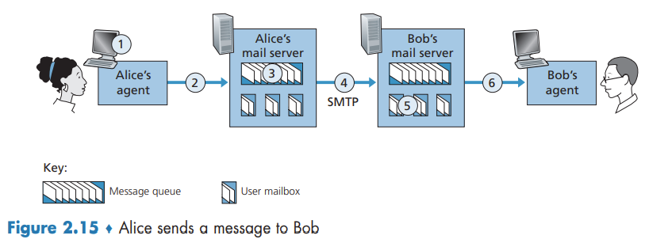

Electronic Mail in the Internet
Electronic Mail in the Internet
The Internet mail system has three major components: user agents, mail servers, and the Simple Mail Transfer Protocol (SMTP).
SMTP is the principal application-layer protocol for Internet electronic mail. It uses the reliable data transfer service of TCP to transfer mail from the sender’s mail server to the recipient’s mail server.
SMTP
SMTP is a push protocol.

Mail Message Formats
Every header must have a From: header line and a To: header line; a header may include a Subject: header line as well as other optional header lines. After the message header, a blank line follows; then the message body (in ASCII) follows.
Mail Access Protocols
Today, there are two common ways to retrieve his e-mail from a mail server. Both the HTTP and IMAP approaches allows to manage folders, maintained in Bob’s mail server. Bob can move messages into the folders he creates, delete messages, mark messages as important, and so on.